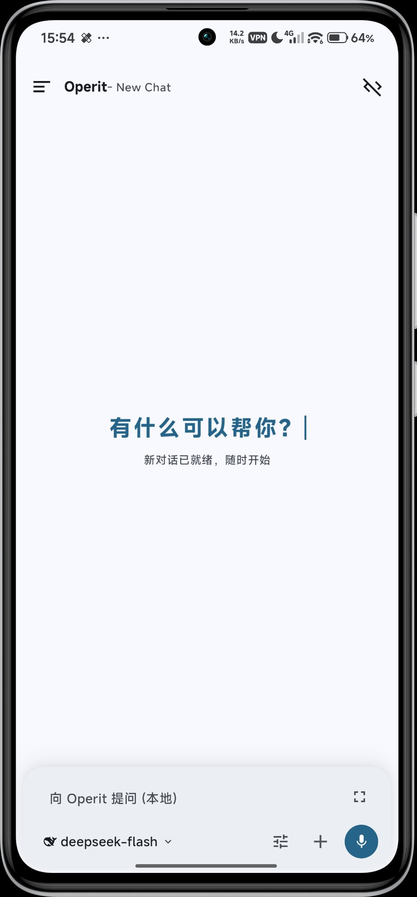
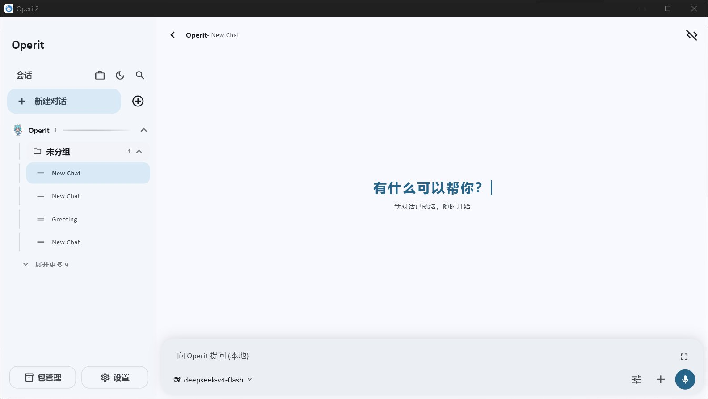

CoreNode
运行 Operit Core 的应用实例。
手机上的、桌面上的、手表上的——每一个能跑 Agent 的 App 都是一个 CoreNode，各自独立运行，互不拖累。
一句话交代任务，手机、手表、桌面、终端自动接续——进度、记忆与上下文，跟着你走。
手机发起 · 云端执行 · 桌面审核——任务在设备间流转
架构 · Architecture
没有晦涩的黑话。Operit2 的世界只由三样东西组成，分工干净，边界清晰。
运行 Operit Core 的应用实例。
手机上的、桌面上的、手表上的——每一个能跑 Agent 的 App 都是一个 CoreNode，各自独立运行，互不拖累。
节点成员、路由与持久化同步范围。
Space 不是执行容器。它定义哪些节点是一伙的、消息怎么走、哪些数据要持久同步——是协作的“场”，不是干活的“桶”。
执行权的交接边界。
工具结果已经持久化、下一轮模型请求尚未发起——就在这个精确的边界，任务可以换一个节点继续跑，不丢不错位。
对等无主从 — 节点之间完全对等，不形成固定主从关系。任何一台设备掉线，其余照常协作。
实时组件 · Live widget
下面不是截图，也不是示意图——是把 App 里「设置 → 设备空间」那块 Flutter 界面按原代码 1:1 重写的前端实现：同一套轨道、光晕、球体与拓扑，连交互都一样。点一点试试。
流转 · Every surface
发起一次，处处接续。下面是一张机票的旅程，也是 Operit2 日常的样子。

早高峰的地铁上，随口说一句，任务开始了。语音、文字都行，Agent 听得懂。
✈
CA1833登机口 B12值机成功、登机口变更、开始登机——重要的事，手腕一震就知道，不用掏手机。

回到工位打开电脑，刚才的航班列表原样等你。改签、选座，接着来，不用再说一遍。
$ operit run 订机票 --to 北京
✓ Space 同步完成 · 4 台设备
✓ CA1833 08:05 已出票
$ ▍
出票、报销、归档，脚本在终端自动跑完，结果回传到每台设备。任务闭环。
安全 · Security
Agent 能替你做事，也必须处处留痕、事事可控。四层防线，一层都不能少。
每个 App 只在自己的沙盒里活动，碰不到别人的数据。
要调用系统能力，先过宿主平台的授权。
Agent 能做什么，由能力模式事先圈定范围。
敏感操作逐次确认，绝不悄悄执行。
白皮书 · Whitepaper
架构、同步协议、安全模型的完整论述，中英双语。
中文版
English